陳杰龍的筆記網站
陳杰龍的筆記網站 主頁
主頁 歸檔
歸檔 分類
分類 其他
其他 關於我
關於我
 期中考統整
期中考統整
資料備份
- 完整備份(Completely Backup)
- 完整將資料、應用系統程式、作業系統及系統程式備份
- 選擇式備份(Selective Backup) or 差異備份(Different Backup)
- 與上次完整備份到目前有更改、新增及刪除的檔案進行資料備份
- 增量備份(Incremental Backup)
- 指對上一次全部備份或增量備份後更新的資料進行備份
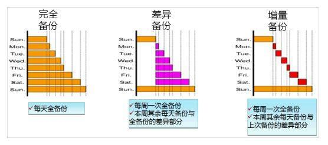
生物特性驗證
- 生理結構唯一性
- 指紋、手形、眼紋、臉形
- 行為差異性性
- 音頻、音律、音量 => 聲音
寫字力道、字型、字體 => 筆跡
- 音頻、音律、音量 => 聲音
- 如何挑選生物特徵來驗證使用者身分之設備，以下四項
- 錯誤接受率(False Accept Rate)：不合法使用者卻被此設備驗證為是合法使用者之錯誤比率
- 錯誤拒絕率(False Reject Rate)：真正合法使用者卻被此設備驗證為是不合法使用者之比率
- 活體驗證功能(Live & Die Verify)：此設備是否有能力辨識活的生理結構
- 驗證時間(Verify Time)：使用者登入到系統驗證出結果的所需時間
通行密碼的安全威脅
- 字典攻擊法
- 利用字典中的單字測試密碼，常見單字有兩萬個，一組單字需1毫秒，20秒內可破解密碼。
- 猜測攻擊法
- 利用使用者相關個人資料來猜測密碼，e.g. 生日、電話、紀念日、地址
- 窮舉攻擊法 or 暴力攻擊(Brute-Force Attack)
- 將所有可能的密碼都試過一次，若密碼過短，更容易猜出來，e.g. 一位字 => 26字母+10數字
- 重送攻擊法
- 攔截使用者傳送通行密碼的資訊(加密也一樣)，再重新送到Server，一樣會通過驗證
- 行騙法
- 偽造軟體，模擬主機登入系統
各種通行密碼技術(在Server存放密碼的方式)
- 設計通行密碼系統之一般需求：
- 系統要訂定錯誤次數(如三次)
- 同時有兩人似相同使用者身分登入時，須給予禁止或警告
- 要強迫使用者定期更改密碼，並檢查密碼是否合格或合理
- 使用者需輸入完所有資料才能驗證身分，否則駭客將知道是否有合法使用者，降低猜測難度
- 直接儲存法
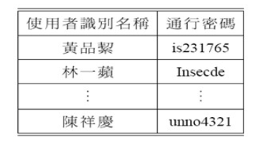- 優點：簡單、容易設計
- 缺點：不易保護、不肖IT人員可直接存取資料
- 單向函數法
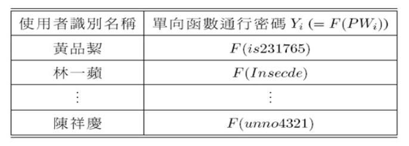- 使用者通行密碼PWi，經單向函數F(．)，得到Yi = F(PWi)
- 比對：將使用者輸入的密碼套用函式，再與資料表中的密碼比對
- 通行密碼加密法
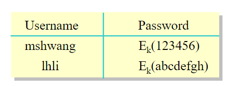- 加密法可透過key解密再得到通行密碼
- 通行密碼加鹽法(Password Salt)
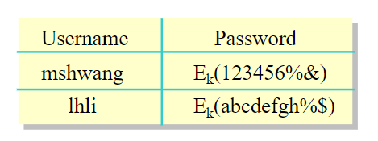- 在通行密碼加密法中，一但通行密碼表外洩，
駭客可以使用新申請的帳密比對出密碼表中使用者的密碼 - %& => random variable
- 在通行密碼加密法中，一但通行密碼表外洩，
- 以上幾種無法阻擋重送攻擊，介紹下列兩種可避免重送攻擊
- 時戳法
- 用戶發出請求連線給Server
- Server回覆 請輸入使用者識別名稱與通行密碼
- 輸入完之後，連同帳密及通信時戳(2023/4/6 20:39:41)，以密文傳送Server
- Server解密，接著算通信時間與Server的時間之差值，是否在合理範圍內
- 問題：用戶端及Server的系統時間需相同
- 亂數法
- 用戶發出請求連線給Server
- Server回覆一亂數值r並請輸入使用者識別名稱與通行密碼
- 輸入完之後，連同帳密及亂數值r，以密文傳送Server
- Server解密，接著驗證r是否相同
- 時戳法
Kerberos身分鑑別系統
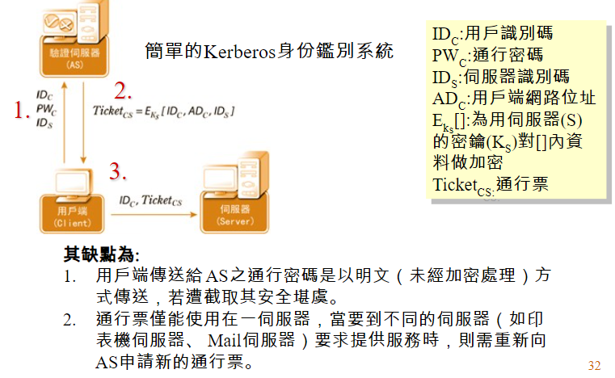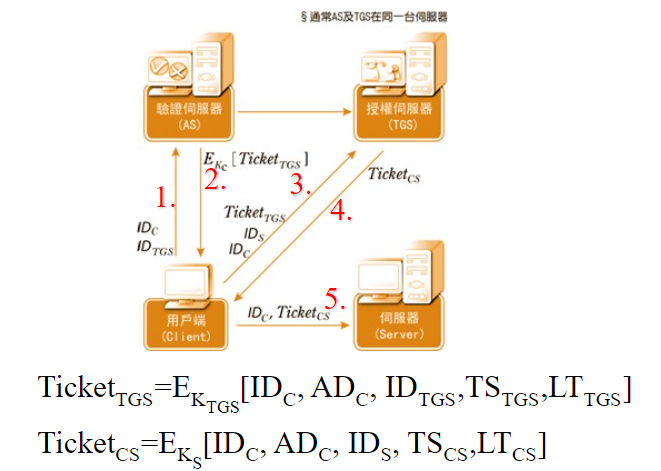
電腦作業系統的安全威脅
- 非法使用者的入侵與存取
- 合法使用者蓄意的破壞或洩密
- 惡意的軟體(malware)
- 伺服器程式攻擊
電腦病毒的類型
- 啟動磁區型病毒(BOOT)
- 透過磁碟片啟動開機
- 也稱為開機型病毒
- 可執行檔病毒
- 檔案型病毒
- 在執行檔裡，中毒後會擴散
- 常駐型病毒(Memory Resident Virus)
- 藏在記憶體，若有程式沒被感染，會立即感染其他未感染檔案
- 非常駐型病毒(Non-memory Resident Virus)
- 在檔案裡，若使用者執行，會立即感染其他未感染檔案
- 巨集型病毒
- word、excel的巨集程式
- 電腦寄生蟲
- 快速自行繁衍(指數)以消耗CPU時間及癱瘓系統
- 特洛伊木馬
- 表面正常的軟體，內藏暗中破壞或盜取資源的惡意程式
- 邏輯炸彈
- 一旦條件吻合就執行木馬程式
- 薩拉米香腸
- 將存款的利息扣除收到自己身上
預防電腦病毒的方法
- 安裝防毒軟體
- 定期更新病毒碼
- 不任意執行電子郵件夾帶的檔案
- 盡量使用硬碟開機，不使用磁片或抽取式硬碟
- 不隨意執行包含巨集的檔案
- 不下載或使用來路不明的檔案
軟體方面的安全漏洞
- 溢位攻擊(緩衝區溢位) Buffer Overflow
- 當一個程序或系統嘗試將大量數據存儲在一個定義好的緩衝區之外，導致超出了緩衝區的邊界，這就是緩衝區溢位。攻擊者可以利用這種漏洞來將惡意代碼注入到受影響的系統中，並在沒有權限的情況下執行該代碼。這種攻擊可以對系統造成嚴重的損害
- 競爭條件
- 在多工的環境下，可能會發生多個執行程式競爭一個資源的情況
- 亂數值的預測
- 若亂數產生器可預知，會造成安全漏洞
密碼學基本概念
- 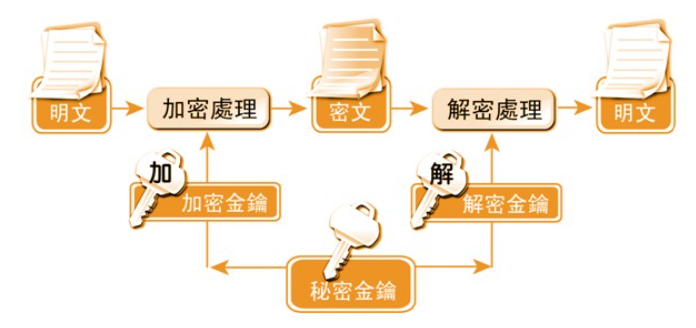
- C=>密文 E=>加密演算法 K=>金鑰 M=>明文 D=>解密演算法 C=>密文
- 加密：C = EK(M)
- 解密：Dk(C) = DK(EK(M)) = M
- 加解密方法或演算法一般都要公開，使用者僅保存秘密金鑰(key)，理由有三：
- 加解密方法不易記憶與保管，金鑰很短，方便保管或腦中
- 就算不公開加解密方法，還是能潛入竊取
- 相容性問題，你有這個加解密方法或設備，但我沒有，也無法使用
密碼系統的安全性程度
- 無條件安全
- 非法使用者不管攔截多少密文，用甚麼方法都無法導出明文
- 一次性密碼系統(One-Time Pad)，用完一次就丟
- 計算安全
- 目前或未來預測之科技，在合理之資源設備下，破解需相當長的時間
古代密碼系統
- 簡單替代法(Simple Substitution)
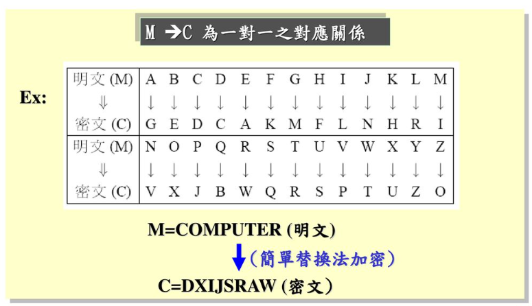 - 編碼法(Code book)
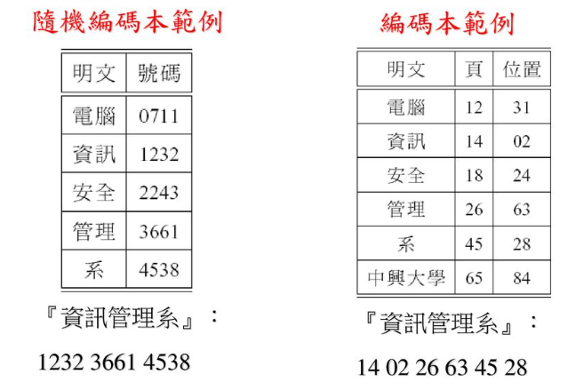 - 同音異字替代法(Homophonic)
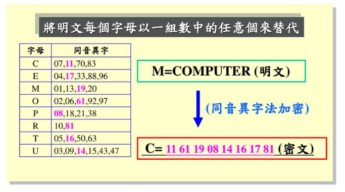 - 多字母替代法
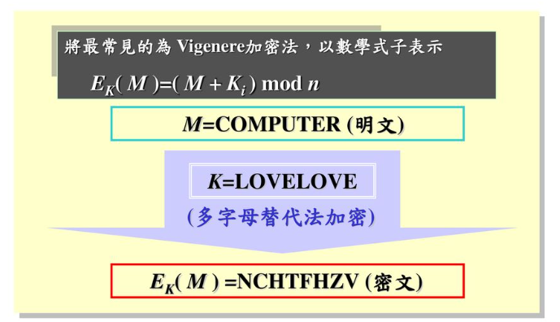 - A=0 B=1 C=2 D=3 D=4...Z=25
- C(2)+L(11) =N(13)
- 多圖替代法
- 同一列，往右一格
- 同一行，往下一格
- 不同列不同行，找到對應的邊角位置
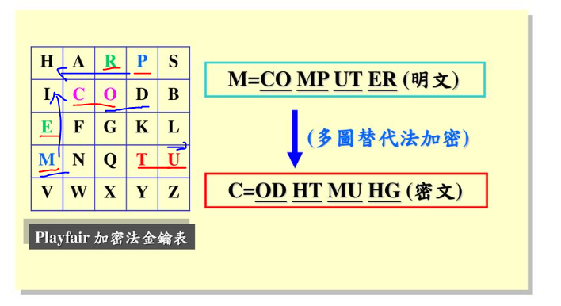
- 窮舉法(Brute-Force Attack)
- 將所有可能的情況都嘗試一遍，直到找出正確的解密方法
- 統計法(Statistics Attack)
- 利用一些統計資料來協助破解密碼
- e.g. [A、E、I、O、U]出現頻率比[Q、X、Z]的出現頻率高出許多
三重DES密碼系統
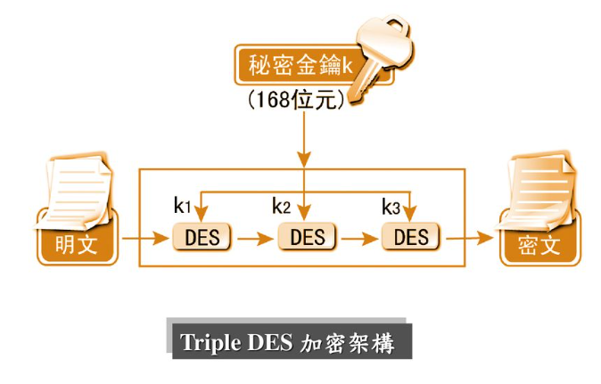
AES的加密演算法
- 將明文轉換成一狀態值矩陣，再將狀態值矩陣與回合金鑰RK0經由回合金鑰加密函數做XOR運算
- 將狀態值矩陣做ByteSub函數的輸入項，找屋S-Box對應的位元組，再替換掉原來的位元組
- 將上一步驟得到的結果做ShiftRow函數的轉換，第一列維持不變，第二列向左循環位移一個位元組，以此類推
- 將上一步驟轉後的結果做MixColumn的輸入項(XOR)
- 將步驟4得到的結果與相對應的回合金鑰，再執行一次AddRoundKey函數的運算，反覆執行步驟二~五，共執行(Nr-1)回合
- 回合完畢後，得到狀態值矩陣值，最後再執行步驟二與步驟三，得到的結果再與最終回合的回合金鑰執行步驟五的AddRoundKey，獲得密文
秘密金鑰密碼系統的加密模式
- ECB Mode(Electronic Code Book Mode)
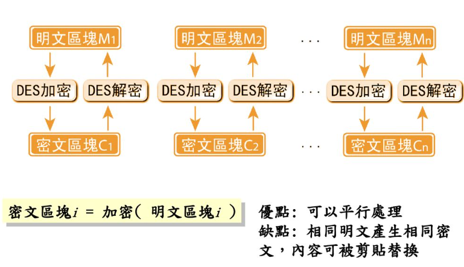- 每個區段各自獨立加解密
- 對方解密後可能會變更原意
- CBC Mode(Cipher Block Chaining Mode)
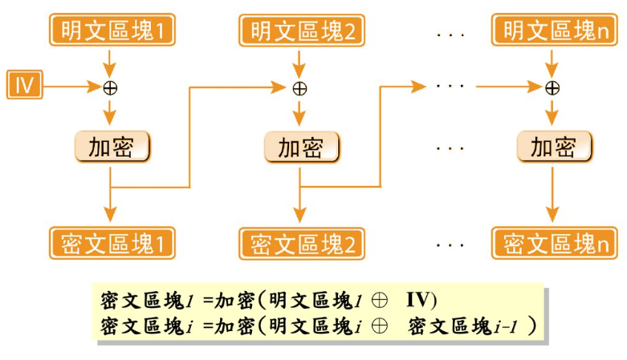 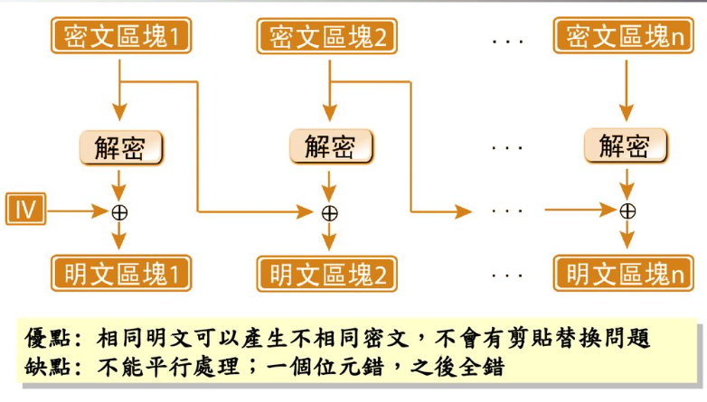- 系統初始向量(Initial Vector,IV)
- 有相同的明文，會產生不同的密文
- 無法各自獨立加密，可以各自獨立解密
- CFB Mode(Cipher Feedback Mode)
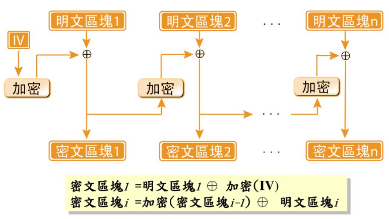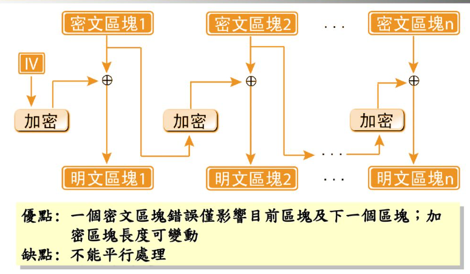- 相同明文不會產生相同密文
- 加解密均不能各自執行
- 加密區塊長度可變度(不受限64位元)
- OFB Mode(Output Feedback Book Mode)
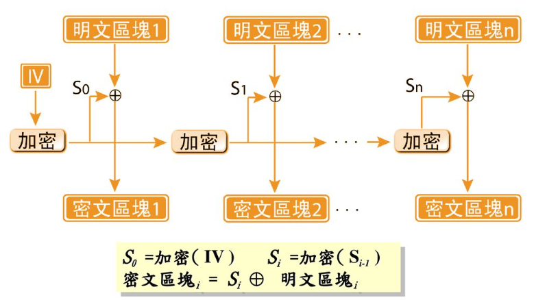 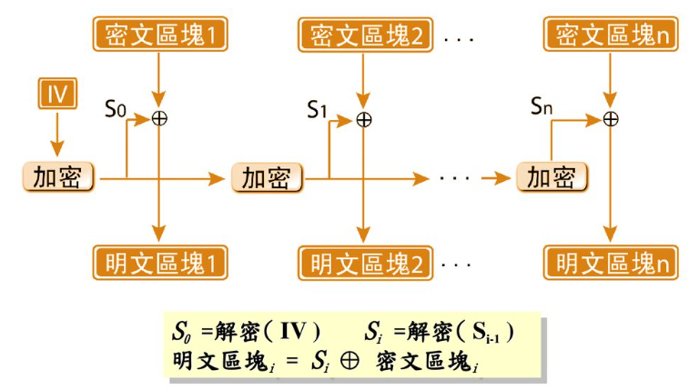- 密文不受前面明文之引響
- 每一個密文都是獨立的
資料庫安全的威脅
- 資料庫內機密資料被非法者所竊知
- 資料庫內資料被非法者所篡改及偽造
- 資料庫內資料被非法者所破壞,讓合法者不能存取
- 資料庫推論(Database Inference)
- 已知黃品傑同學就讀資管系，而且該班只有她一位女生，若想得知黃品傑同學的英文成績
請問資管系英文成績總分 405
請問資管系男同學英文成績總分 312
非法者因此可推論黃品傑同學的英文成績為 405-312 = 93
- 已知黃品傑同學就讀資管系，而且該班只有她一位女生，若想得知黃品傑同學的英文成績
- 資料庫聚合(Database Aggregation)
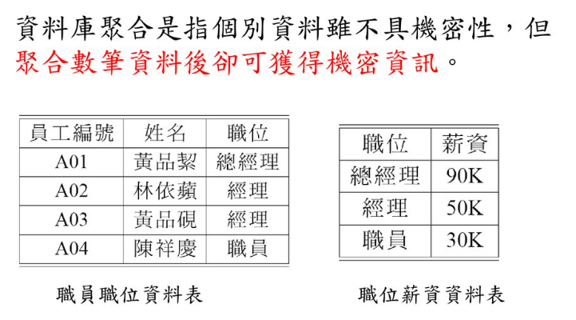 - 木馬藏兵(Trojan horse)
- 秘道(Covert Channel)
- 以1次1個bit的方式慢洩漏資料
統計資料庫安全
- 提供平均值(average)、綜合(sum)、異變數(variable)、總數(count)等統計資料之資料庫
- 有些統計資料屬於機密性
- 僅允許做統計查詢而禁止查詢某特定的個別機密資料
- 查詢統計量威脅(Query Set Attacks)是常見的統計資料庫安全威脅
推理問題的解決方法
- 解決統計資料庫的推理問題，可分為下列三個:
- 近似查詢法
- 不回答正確的結果給查詢者，而將此結果做些微修改，以偽裝正確資料
- 合成法

- 隨機取樣法
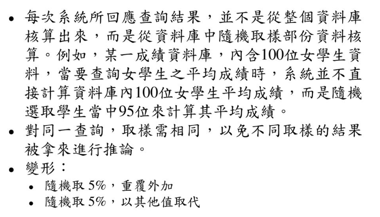 - 隨機誤差法
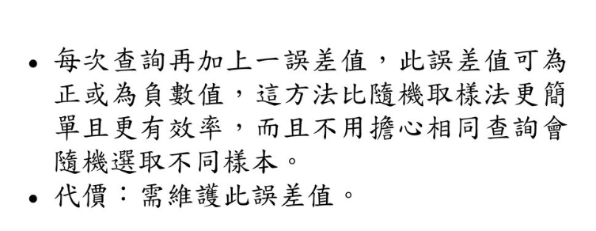
- 限制查詢法
- 對於敏感資料的查詢及其統計量可能會危及資料庫安全時，則系統拒絕回答
- 追蹤法
- 在回答查詢時，先分析此查詢是否會被用來推論統計資料庫之敏感資料，若是則拒絕回答
- 近似查詢法